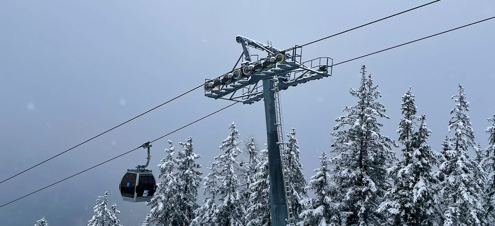

17/3/2024 af Frederik Daugaard
Skiture for studerende
Opdag de bedste skiture for studerende, fyldt med spændende events og uforglemmelige fester, der vil skabe minder for livet!
Skiferier er ikke kun forbeholdt erfarne skiløbere eller velhavende rejsende -
de er også for dig, den studerende, der leder efter sjov, eventyr og fællesskab på pisten!
Med en voksende interesse for skiture blandt studerende, er der nu flere muligheder end nogensinde før for at deltage i spændende ski-ture med masser af events og fester, der er skræddersyet til den studerende livsstil.
Uanset om du er nybegynder eller erfaren skiløber, er disse skiture designet til at give dig den ultimative skioplevelse kombineret med uforglemmelige fester og fællesskab med andre studerende.
Så pak dine ski og festglade humør, og gør dig klar til at skabe minder for livet på pisten!